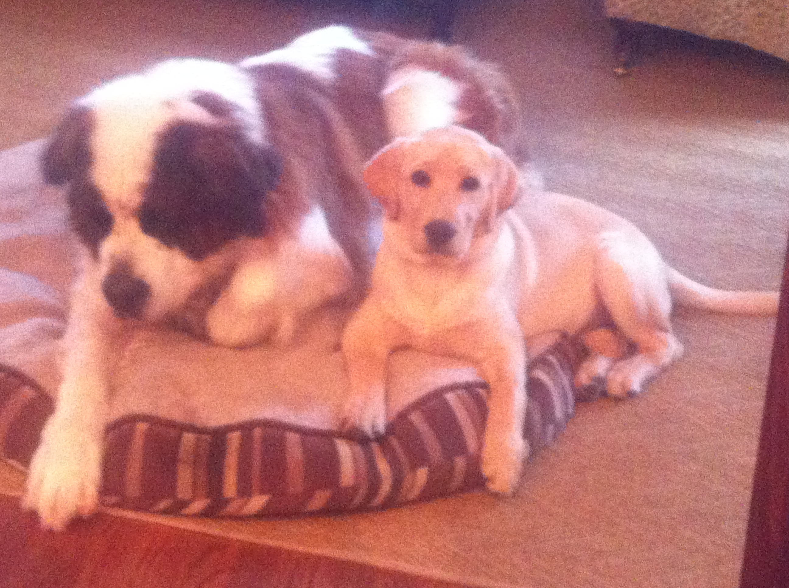

Welcome to my page
The Labrador is an affectionate, people-oriented breed, so it’s no wonder that these dogs make the best cuddle buddies on the planet. They are known to curl up in your lap like a lap dog (only six times the size!) and nuzzle up with their adorably cute faces. At the end of a long day, nothing is better than a delightful, soul-soothing cuddle with your Labrador. It’s as good as a therapy session and much cheaper! I love my yellow lab Theo and I am not saying he is the best dog in the wolrd, but I am not saying he isn't either....
Saint Bernards are great dogs as well!
Originating from Roman Molossian dogs, the St. Bernard (originally called Alpine Mastiffs) first rose to fame in the late 1600s as helpers for people at the Great Saint Bernard Hospice, located in the Pennine Alps between Switzerland and Italy. They were originally work animals, used to pull carts and act as watch dogs in this remote location. However, it was soon discovered that they could locate lost snowbound travelers and revive them by either licking their face or cuddling up beside them to create warmth.
Follow me on Linkedin!
My Linkedin Profile (logo is linked as well)